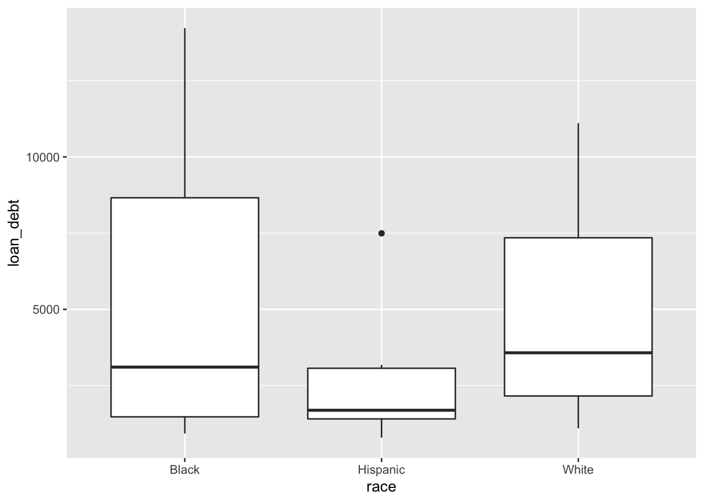
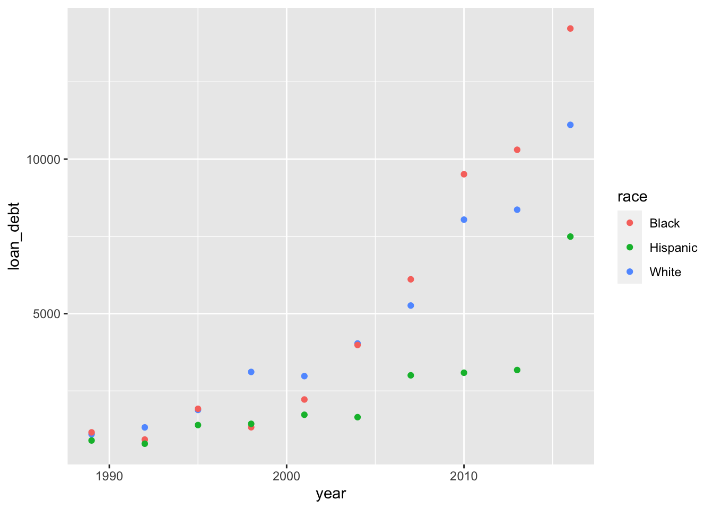
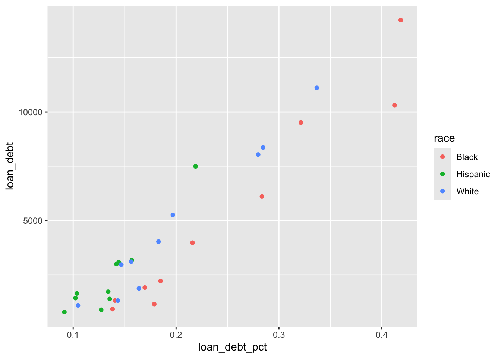
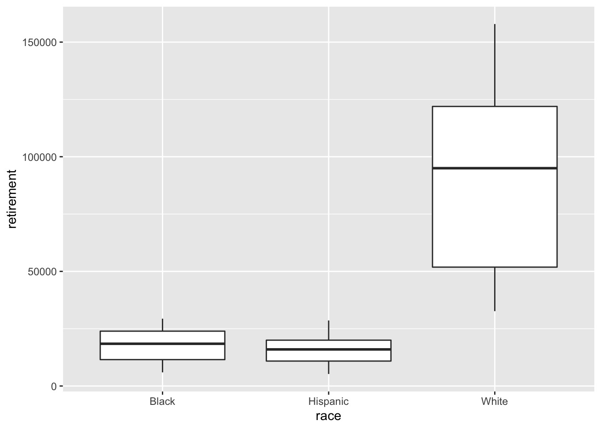

I graduated with my BS in Business Analytics a few days ago. My mom came to visit for graduation and stayed for a few days. I wanted to show her some of what I learned at school through a hands on activity so we found a Tidy Tuesday dataset and did some exploring. There’s no particular rhyme or reason to this, but I wanted to share my passion for data with her and thought it would be cool to share with the rest of you as well. While I did provide some guidance, most of the exploration is what she thought might be interesting and wanted to explore.
Important
From here on out, I wrote down my mom’s stream of consciousness thoughts on what we were working on. It’s not necessarily verbatim, but gets her thoughts across.
Italics are my words
Intro
First we load our packages and data.
Do you want to preview the data?
head(debt)
year race loan_debt loan_debt_pct
1: 2016 White 11108.410 0.3367511
2: 2016 Black 14224.770 0.4183588
3: 2016 Hispanic 7493.999 0.2189689
4: 2013 White 8363.605 0.2845555
5: 2013 Black 10302.660 0.4122773
6: 2013 Hispanic 3177.410 0.1570289
head(retirement)
year race retirement
1: 1989 White 32649.430
2: 1989 Black 5954.398
3: 1989 Hispanic 7121.722
4: 1992 White 36637.760
5: 1992 Black 7798.197
6: 1992 Hispanic 5248.894
Do you want to see summary statistics?
Yeah. Can we do that?
summary(debt)
year race loan_debt loan_debt_pct
Min. :1989 Length:30 Min. : 793.1 Min. :0.09146
1st Qu.:1995 Class :character 1st Qu.: 1406.8 1st Qu.:0.13887
Median :2002 Mode :character Median : 2992.6 Median :0.16049
Mean :2002 Mean : 4119.4 Mean :0.19388
3rd Qu.:2010 3rd Qu.: 5899.2 3rd Qu.:0.21823
Max. :2016 Max. :14224.8 Max. :0.41836
summary(retirement)
year race retirement
Min. :1989 Length:30 Min. : 5249
1st Qu.:1995 Class :character 1st Qu.: 15021
Median :2002 Mode :character Median : 21809
Mean :2002 Mean : 41411
3rd Qu.:2010 3rd Qu.: 44936
Max. :2016 Max. :157884
Looking at debt
Can we see debt by race?
debt |>ggplot() +geom_boxplot(aes(x = race, y = loan_debt))

It’s been 40 years since I saw a box and whisker plot in college… But it’s interesting that Hispanics seem to have lower debt than Blacks and Whites who seem to be about equal.
What about debt over time?
debt |>ggplot() +geom_point(aes(x = year, y = loan_debt, color = race))

The difference in debt between Blacks and Whites increases dramatically over time.
Does the share of families with debt change over time?
debt |>ggplot() +geom_point(aes(x = loan_debt_pct, y = loan_debt, color = race))

It appears that fewer Hispanics take on student loan debt than Blacks or Whites.
Looking at retirement
Can we copy/paste that code for retirement?
Yes. Yes we can!
retirement |>ggplot() +geom_boxplot(aes(x = race, y = retirement))

Whites seem to have much more solid retirement savings that Blacks or Hispanics. Even the lowest whisker in the Whites plot seems higher than the highest points in the Black or Hispanics plots.
minMaxRetirement <- retirement |>group_by(race) |>summarise(min =min(retirement), max =max(retirement))minMaxRetirement
# A tibble: 3 × 3
race min max
<chr> <dbl> <dbl>
1 Black 5954. 29365.
2 Hispanic 5249. 28581.
3 White 32649. 157884.
wealth_type year race wealth_family
1: Average 1963 Non-White 19503.84
2: Average 1963 White 140632.66
3: Average 1963 Black NA
4: Average 1963 Hispanic NA
5: Average 1983 Non-White 73233.62
6: Average 1983 White 324057.60
summary(wealth)
wealth_type year race wealth_family
Length:96 Min. :1963 Length:96 Min. : 2467
Class :character 1st Qu.:1991 Class :character 1st Qu.: 19559
Mode :character Median :2000 Mode :character Median : 97209
Mean :1998 Mean :158020
3rd Qu.:2008 3rd Qu.:156895
Max. :2016 Max. :919336
NA's :24
wealth |>ggplot() +geom_boxplot(aes(x = race, y = wealth_family))
It looks like there isn’t any data for Non-Whites. The median has increased for Whites, but dropped in 2008, while for others it has remained the same over time.
Add wealth into the mix
df <-left_join(debt_retirement, wealth, by =c("race", "year"))head(df)
year race loan_debt loan_debt_pct retirement wealth_type wealth_family
1: 2016 White 11108.410 0.3367511 157884.20 Average 919336.1
2: 2016 White 11108.410 0.3367511 157884.20 Median 171000.0
3: 2016 Black 14224.770 0.4183588 25211.85 Average 139523.1
4: 2016 Black 14224.770 0.4183588 25211.85 Median 17409.0
5: 2016 Hispanic 7493.999 0.2189689 28581.12 Average 191727.3
6: 2016 Hispanic 7493.999 0.2189689 28581.12 Median 20920.0
It’s kinda confusing with wealth_type, let’s change it a bit
Warning in dewey::regsearch(df, dependent = "retirement", independent =
colnames(df)[c(1:4, : Missing 'interactions' argument. Defaulting to FALSE.
Warning in dewey::regsearch(df, dependent = "retirement", independent =
colnames(df)[c(1:4, : Missing 'multi' argument. Defaulting to FALSE.
[1] "Assembling regresions..."
[1] "Creating 63 formulas. Please be patient, this may take a while."
[1] "Creating regressions..."
[1] "Running 63 regressions. Please be patient, this may take a while."
[1] "Running regressions..."
I would choose retirement ~ + average_wealth + loan_debt + loan_debt_pct + median_wealth because it has the highest \(R^2\) value.
That’s not quite right. retirement ~ + average_wealth + median_wealth is much better because 96% of the model is explained by those two variables so adding loan_debt_pct and loan_debt does not give a lot of benefit.
Warning in dewey::regsearch(df, dependent = "retirement", independent =
colnames(df)[c(1:4, : Missing 'multi' argument. Defaulting to FALSE.
[1] "Gathering variables..."
[1] "WARNING: Using interaction terms without multithreading may take a very long time"
[1] "Assembling regresions..."
[1] "Creating 82159 formulas. Please be patient, this may take a while."
[1] "Creating regressions..."
[1] "Running 14828 regressions. Please be patient, this may take a while."
[1] "Running regressions..."
This is pretty cool. Average wealth by itself is pretty good, but when it interacts with loan_debt_pct, median_wealth, race, and year, it seems to produce a really great model.
Of course, we still want to be careful about overfitting.
Parting Thoughts
Race appears to have a huge impact on everything and increasing educational debt increases retirement, but only for Whites. I’d be curious to see the data behind the loans to learn why increasing educational debt does not always correlate with increased wealth.
Post-Conclusion
It’s Gus again. I had a really fun time with this. I like to think my mom learned a lot and I’m hoping you did too.